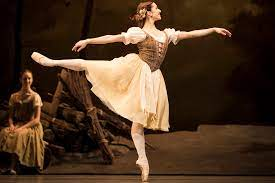
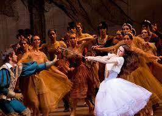
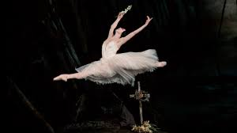

Olá bailarino(a) ou interessado na dança! Quer saber mais sobre o enredo do ballet clássico Giselle? Está no site correto! Confira abaixo:
Compositor musical: Adolph Adam;
Coreógrafos: Jules Perrot e Jean Coralli;
Estreia: Ópera de Paris (1841);
No primeiro ato: Giselle é uma aldeã que é apaixonada em dançar, mesmo tendo uma doença do coração, e todos adoram assisti-la. Então ela encontra e se apaixona por Albrecht , que é o prícipe da realeza, noivo de Bathilde, também da realeza, porém, ele finge para Giselle que é um camponês támbem, adotando o nome de Loys.
Hilarion, camponês da mesma aldeia, é apaixonado por Giselle e quando vê Albrecht e Giselle juntos, a questiona e briga com o príncipe disfarçado e na luta, percebe que Loys (Albrecht) faz um gesto de pegar a espada da bainha, algo que só pessoas da realeza faziam, já que só essas poderiam ter acesso à armas.
Após isso, Bertha, a mãe protetora de Giselle, reune todos da aldeia e conta a lenda das Willis: fantasmas de mulheres que morreram antes de se casar, que a noite, na floresta, buscam homens para dançar até a morte. Depois disso, os camponêses aproveitam para dançar e ocorre o famoso Pas de Paysant.
Então, a realeza passa pela aldeia de Giselle, e Albrecht se esconde, e a aldeã se encanta com todas as roupas e objetos de valor, se tornando amiga de Bathilde, Giselle então, dança para todos a clássica variação de Giselle. Logo após, os nobres vão embora.
Albrecht retorna para Giselle e Hilarion aparece, revelando para Giselle que Loys na verdade é um príncipe e chama a realeza para a aldeia novamente com um berrante. Com isso, Giselle descobre que Albrecht é noivo de Bathilde e ocorre a tão conhecida cena da loucura de Giselle, onde, somando seus problemas cardíacos, com a traição, ela falece nos braços de sua mãe.
No segundo ato: Hilarion, à noite, visita o túmulo de Giselle e acaba se encontrando com as willis e é morto. Myrtha, a rainha das willis, aparece e torna Giselle uma willi. Albrecht também vai ao túmulo e encontra com o fantasma de Giselle, que tenta impedir a sua morte pelas willis, dançando até o amanhecer, quando as willis vão embora e Albrecht é salvo. Os dois se despedem ainda apaixonados e Giselle vai com as willis.
Uma história clássica e trágica de amor, com músicas e coreografias que encantam!
